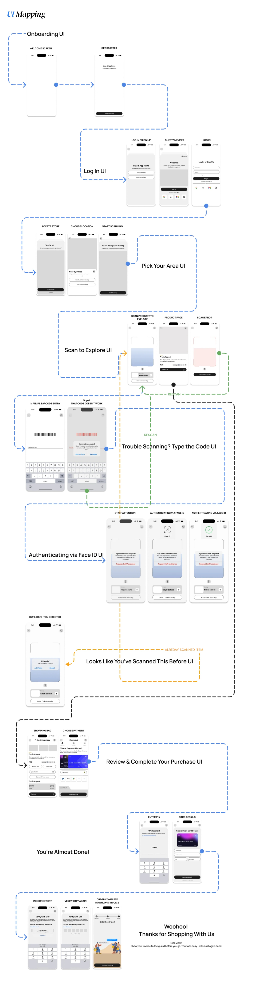
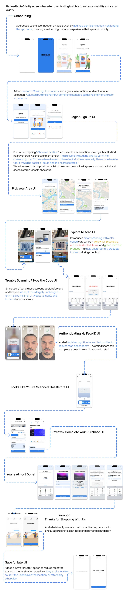

UI Mapping: full flow
01

High-fidelity screens, annotated
02

← Back to Grab & Go
Appendix to the Grab & Go case study
The complete screen-by-screen flow and the high-fidelity, annotated screens refined through user testing.

